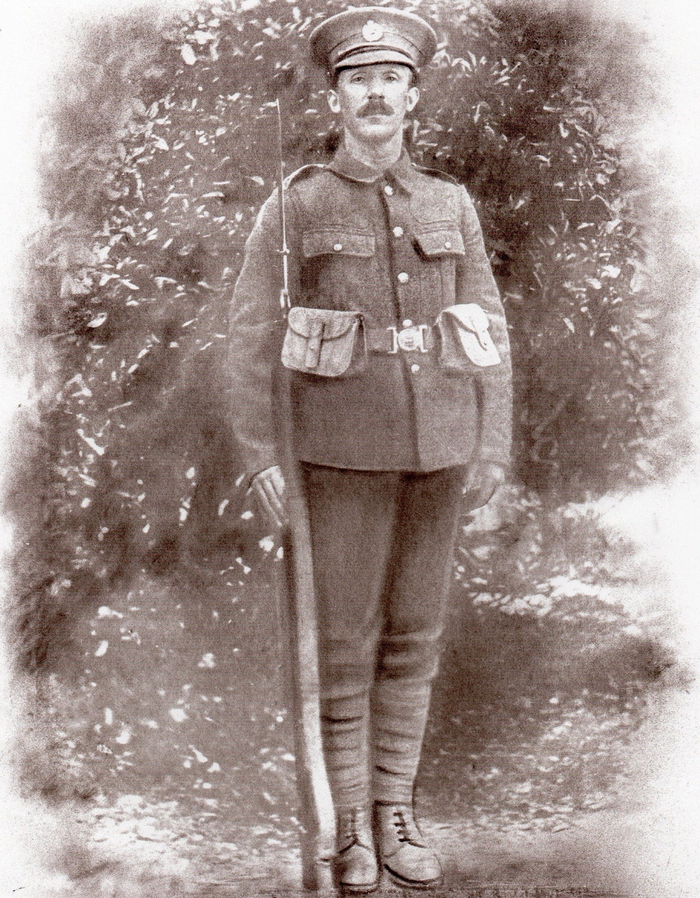

William Henry Wood 1880 - c1952
[ Home ] | [ Calendar ] | [ Surnames Index ] | [ Family History ]A plasterer and the son of James Wood and Elizabeth Jarvis, William Wood was born in Battersea, London, England on Jun 11, 1880<span class="citation">1,2</span> and married Martha Myers (with whom he had 5 children: <a href="I3054.html">William Henry</a>, <a href="I3055.html">Martha Sarah</a>, <a href="I3053.html">James</a>, <a href="I264.html">Hilda</a> and <a href="I3058.html">Wilhelmina</a>, along with 1 surviving child) in Tynemouth, Tyne and Wear, England around Nov 1907<span class="citation">4</span>.</p><p>Throughout his life, he lived at 40 Burdon Main Row in Tynemouth on Apr 2, 1911<span class="citation">5</span>; and on 2 Langley Road in Tynemouth on Sep 29, 1939<span class="citation">1</span>. During 1914, he was serving in the army (<em>regiment: Royal Engineers; Service number: 465445</em>).<p>He died <i>c.</i> May 1952 in Tynemouth<span class="citation">3</span>.
Parents
- James was born c. 1855
- Elizabeth Jane was born in 1857
Children
- William Henry was born in 1908
- Martha Sarah was born in 1910
- James was born on May 12, 1915
- Hilda was born on May 7, 1918
Citations
- 1939 Register - Findmypast (was the head of the household)
- England & Wales births 1837-2006 - Findmypast
- England & Wales deaths 1837-2007 - Findmypast
- England & Wales Marriages 1837-2005 - Findmypast
- 1911 Census for England & Wales - Findmypast (was age 30 and the head of the household)
Media
William Henry Wood

England & Wales marriages 1837-2005 - BMD/M/1907/4/AZ/000442/163
England & Wales births 1837-2006 - BMD/B/1880/3/AZ/000624/251
1939 Register - TNA/R39/2949/2949G/010/23
British Army Service Records - GBM/WO363-4/7316520/31/728
British Army Service Records - GBM/WO363-4/7316520/15/319
British Army Service Records - GBM/WO363-4/7316520/15/323
1911 Census for England & Wales - GBC/1911/RG14/30763/0007/1
England & Wales deaths 1837-2007 - BMD/D/1952/2/AZ/001040/148
Family Tree

Generated by Ged2Site. Last updated on Jul 20, 2025